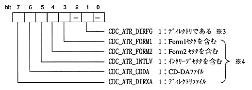

Title | Data | Data Name | No |
access macro | type | Description |
|---|---|---|
CDC_FILE_FAD (file) | Sint32 | File start frame address |
CDC_FILE_SIZE (file) | Sint32 | File size in bytes Count) * 1 |
CDC_FILE_UNIT (file) | Uint8 | File unit size |
CDC_FILE_GAP (file) | Uint8 | Gap size |
CDC_FILE_FN (file) | Uint8 | File number * 2 |
CDC_FILE_ATR (file) | Uint8 | File attributes |
* 1: Net file size without gap sectors when interleaving. * 2: If there is no directory record system information, the file number is 0.

* 3: bit1 is the directory bit of the file flag in the directory record. Enabled when there is no system information in the directory record. (If there is system information, bit7 is prioritized for directory identification) * 4: Bits 3 to 7 are attribute information conforming to the CD-ROM XA standard. If there is no system information, bits 3 to 7 are all 0.